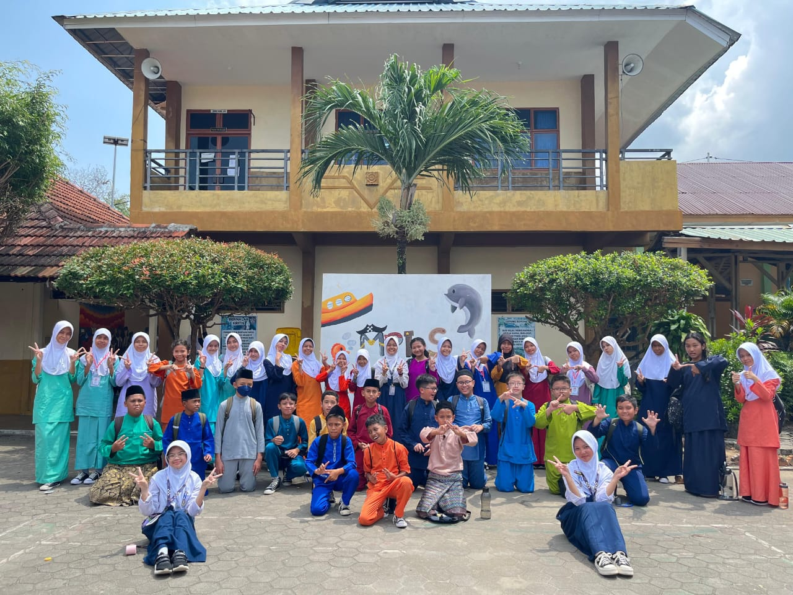
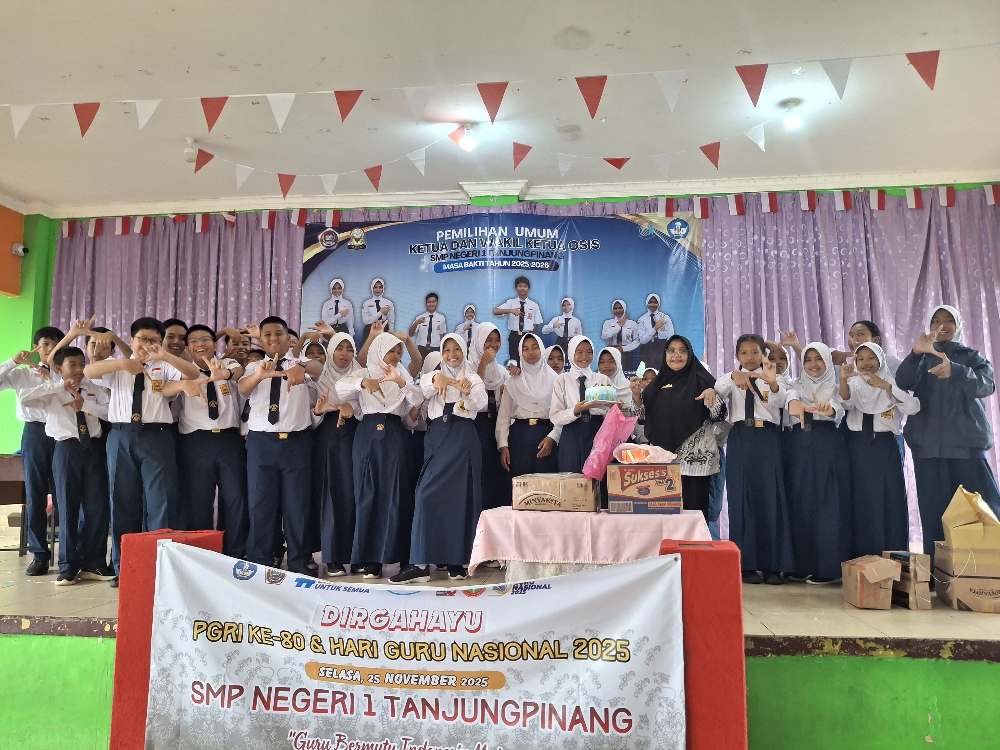
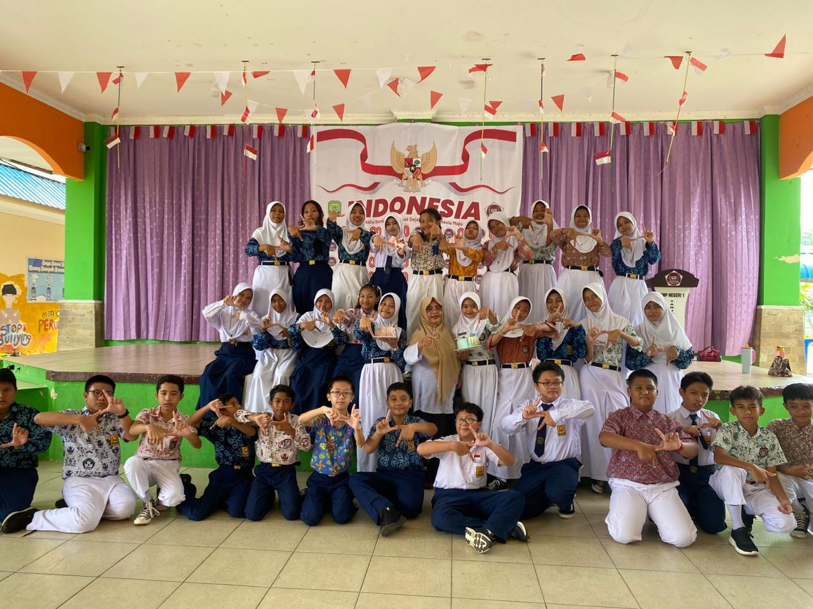
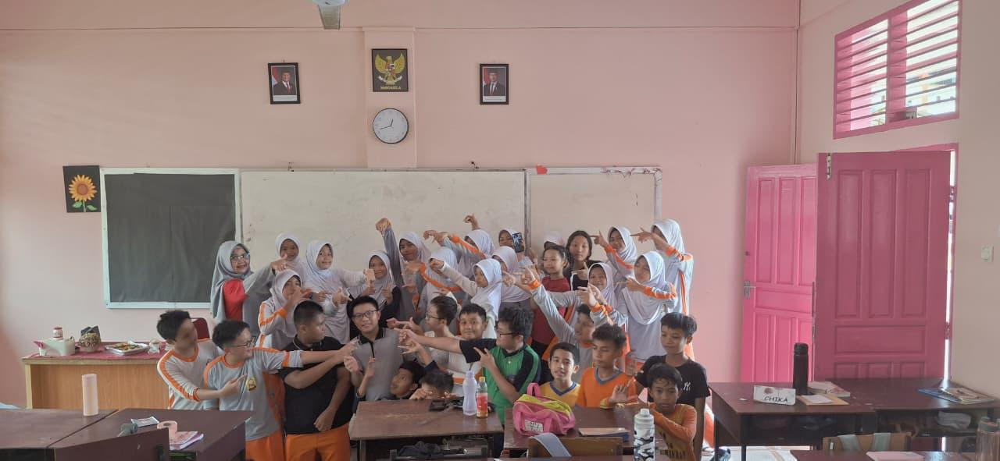

Website Resmi Kelas 7.7 🌊🐬
Kelas VII 7 adalah salah satu kelas di SMP Negeri 1 Tanjungpinang yang terdiri dari hampir 35 siswa, dengan 15 siswa laki-laki dan 20 siswa perempuan. Kelas ini dikenal sebagai kelas yang kompak, aktif, dan memiliki semangat belajar yang tinggi.
Dalam kegiatan belajar, siswa-siswi kelas VII 7 selalu berusaha disiplin dan saling bekerja sama. Mereka juga aktif mengikuti berbagai kegiatan sekolah, baik akademik maupun nonakademik, seperti lomba, organisasi, dan kegiatan sosial.
Kelas ini dibimbing oleh wali kelas Ibu Yurisnawati, S.Pd, yang selalu memberikan motivasi dan arahan agar siswa-siswinya berkembang menjadi pribadi yang bertanggung jawab, berprestasi, dan berakhlak baik.
Dengan kebersamaan dan kerja sama yang kuat, kelas VII 7 berkomitmen untuk terus meraih prestasi dan menjaga suasana kelas yang nyaman, tertib, dan menyenangkan.

Yurisnawati S.Pd✨


